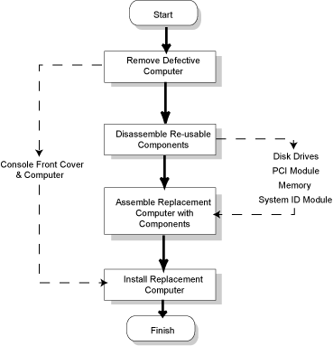

Operating Documentation
Direction 5114043-800, Rev# 9
LightSpeed 3.X Service Methods (Advanced)
Operating Documentation |
The Octane2 computer Field Replaceable Unit (FRU) is shipped configured to reuse components from the computer it replaces. The computer is shipped minus the following components:
Disk Drives
PCI Module and PCI boards
Memory Modules
System ID Module
You will remove these components from the computer being replaced and reinstall them in your replacement computer. (All of the above components are also available as individual FRUs.)
Avoid damage to components and personal injury by taking the following precautions:
Do not touch or clean the compression connector.
Place the protective cap over the compression connector, if available.
Lay all modules and board on antistatic surfaces only.
Place all modules and board in antistatic bags.
Wear a grounded ESD wrist strap in good working order.
Maintain a clean work environment.
Tag and lockout power.
Wait five minutes after power is off before you continue. Let the system module cool.
Disk drives are packaged in special carriers and require no assembly or disassembly. The primary system drive is placed in the bottom bay and the (image) disk in the middle drive bay. No jumpers are required because the computer’s hardware automatically assigns SCSI IDs.
The system ID module is unique to your CT system. The System ID Module contains the computer’s unique “Ethernet Address” number. If you loose the ID module, all of the Software Options you have installed will not be available for use. System software is locked to this unique ID during installation.
Illustration 1: Octane2 Replacement Process

Electronic devices are extremely sensitive to ESD damage. Always do
the following:
| |
To Replace the Octane2 FRU, perform the following:
Remove Defective Computer - (see Remove Defective Octane2 - H3 Console)
Disassemble Reusable Components - (see Disassemble Reusable Components)
Assemble Replacement Computer with Components - (see Assemble Replacement Octane2 with Components)
Install Replacement Computer in Console - (see Install Replacement Octane2 in H3 Console)
The following procedures provide details necessary for replacing the individual FRUs within an Octane2 Computer:
Octane2 512 Memory - (see Octane DIMM Replacement)
Octane2 9GB Disk Drive - (see Octane Internal Hard Drive Replacement)
Octane2 PCI Card Cage Assembly - (see Octane PCI Card Module Replacement)